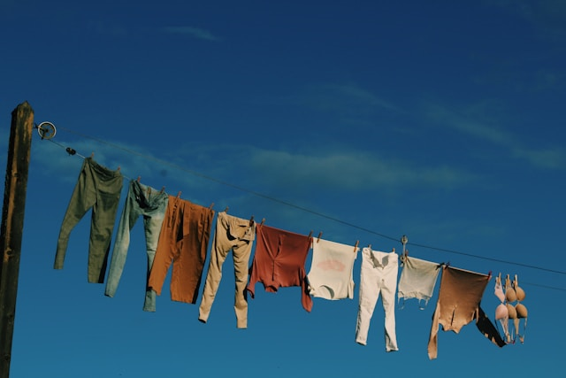
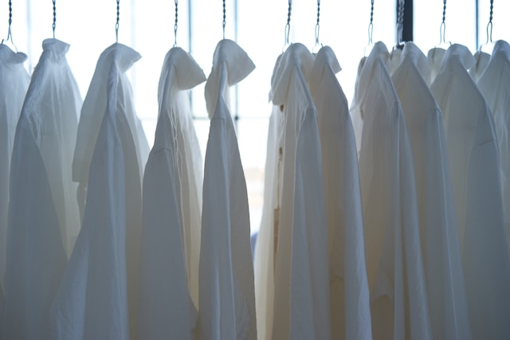

Use The Outdoors.
With a lot of sun and a nice breeze, we can extend our laundry outside. This allows you to save space, energy and money while also keeping the area free of laundry that has yet to be moved.

Choose A Time Or Day.
Setting a routine will help keep everything under control in the laundry area. Choose one day a week to do it all if you are a smaller household or if a larger household, choose one time a day and stick to it. Reward yourself afterwards, this will help to encourage the routine.